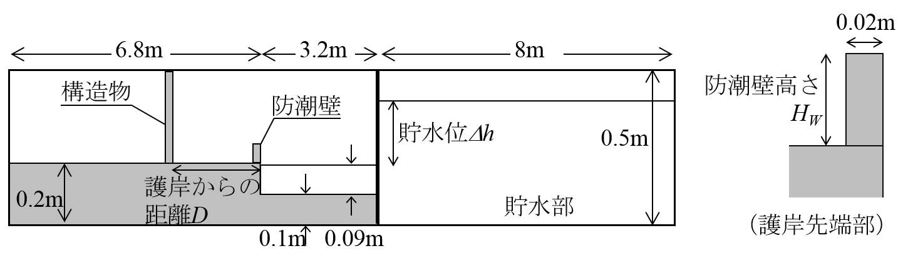
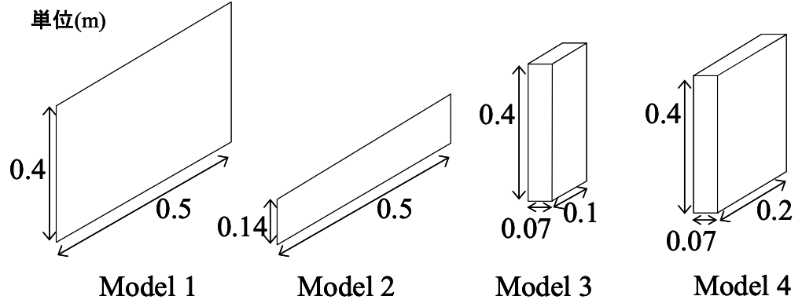
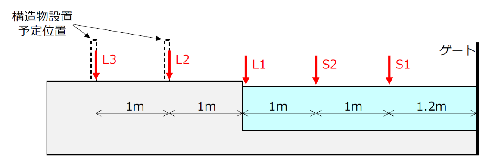

課題４ 陸上構造物へ作用する津波波圧
概要
有光ら(2012)による陸上構造物へ作用する津波波圧を対象とした水理模型実験の再現計算を行う．本課題では，貯水部のゲートを急開することにより発生させた段波状の津波を対象とし，段波が一様水深の海域部を伝播し，それに続く直立護岸を越流し，平坦な陸上部に設置された構造物に作用する際の，津波水位や構造物前面波圧の再現性を検証する．
内容
陸上構造物に作用する津波流体力の評価は，重要な設計項目の一つである．有光ら(2012)は，構造物を考慮した平面2次元の津波遡上計算結果を活用して構造物に作用する波圧の評価方法を提案しており，その津波波圧評価手法の検証を目的として水理模型実験を行っている．水理模型実験では，ゲート急開により発生させた段波が一様水深の海域部を伝播し，それに続く直立護岸を越流し，平坦な陸上部に設置された構造物に作用する際の波圧が計測されており，本課題ではこの水理模型実験の再現計算を行う．
実験方法および実験条件を以下に示す．まず実験装置を図-1に示す．実験には矩形水路（長さ18m×幅0.5m×高さ0.5m）を用い，長さ8mの貯水部のゲートを急開することにより段波状の津波を発生させている．津波は，長さ3.2mの一様水深部（海域）を伝播し，直立護岸を越流して平坦な陸上部を遡上する．
実験では表-1に示すように，構造物の形状（図-2参照），構造物の位置（護岸からの距離D），防潮壁高さHw，貯水位Δhを変化させて行っている．
図-3に示す5箇所の水位および構造物前面の圧力を計測した．圧力は，底面からの高さ0.01m~0.23mの範囲を0.02m間隔で計測した．実験データのサンプリング周波数は500Hzで計測時間は40秒である．計測は3回繰り返している．また，護岸前面(L1)での水位が0.01mを超えた時刻を0sとして時刻のゼロ点補正を行っている．
本課題では，表-1に示す実験ケースのうち，Model 3，D=1mおよび2m，Hw=0.02m，Δh=0.15mのケースを対象とする．
比較方法
事前準備用の実験データとして，一部の実験ケースのデータが津波防災研究ポータルサイトのベンチマーク問題として公開されており，計算モデルの精度を確認することができる．公開されている実験ケースは，構造物形状：Model 1およびModel 3の2種類，護岸からの距離：1.0mおよび2.0mの2種類，防潮壁高さ：0.00m，貯水位：0.15mである．
ハッカソンでは，表-1のうち，Model 3，D=1mおよび2m，Hw=0.02m，Δh=0.15mのケースを対象とし，構造物前面の水位および圧力（底面からの高さ0.01m~0.07mの範囲を0.02m間隔）の時系列を比較する．
参考文献
有光剛，大江一也，川崎浩司，構造物前面の浸水深と流速を用いた津波波圧の評価手法に関する水理実験，土木学会論文集B2(海岸工学)，Vol.68，No.2，pp.I_776-I_780，2012．【Link】
お問い合わせ
tsnm-wg3[at]cm.kansai-u.ac.jp
※送信する際は[at]を@に変更してください．
図表

図-1 実験装置の概要

図-2 構造物模型の概要

図-3 水位の計測位置
表-1 実験ケース
| 構造物形状 | 護岸からの距離 D(m) | 防潮壁高さ Hw(m) | 貯水位 Δh(m) |
| Model 1 Model 2 Model 3 Model 4 | 1.0 | 0.00 | 0.09, 0.15, 0.21 |
| 0.02 | 0.09, 0.15 | ||
| 0.05 | 0.15 | ||
| 2.0 | 0.00 | 0.09, 0.15, 0.21 | |
| 0.02 | 0.09, 0.15 | ||
| 0.05 | 0.15 |